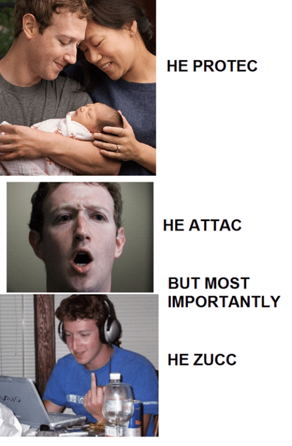

Mark Zuckenberg: Recientemente, Mark Zeuckenberg, dueño y creador de la red social mas usada, Facebook, ha vendido la información personal de casi 85 millones de usuarios (Lo cual no me afecta porquencree que tengo 27 años) al servicio de inteligencia de Rusia, violando la privacidad de precticamente todos sus usuarios. La controversia de este tema no se hizo esperar (almenos no es Estados Unidos) ya que se trata de una violación completa a las vidas privadas de los usuarios, eventualmente y al ganar generar tanto arguende sobre esto, los memes no se hicieron esperar.
Esto mas que ser un formato o tipo de meme, es un tema, ya que se ha adaptado a otros numerosos formatos de memes.